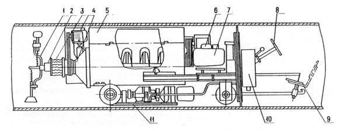
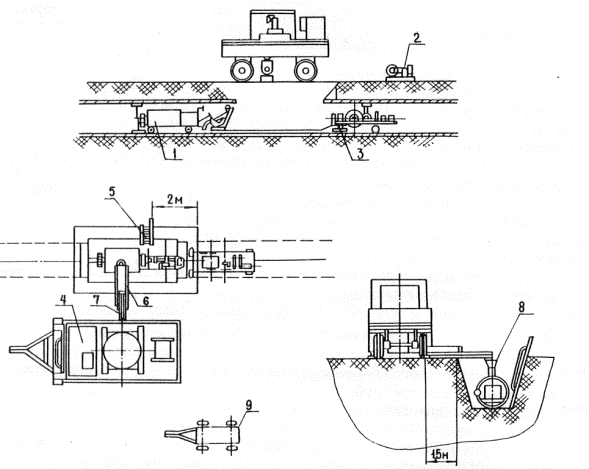

АКХ им. К. Д. ПАМФИЛОВА
ПОСОБИЕ
по
защите
внутренней
поверхности
стальных труб
от коррозии
(к СНиП 2.04.02-84)
АКАДЕМИЯ
КОММУНАЛЬНОГО ХОЗЯЙСТВА
им.
К. Д. ПАМФИЛОВА
ПОСОБИЕ
по
защите
внутренней
поверхности
стальных труб
от коррозии
(к СНиП 2.04.02-84)
Москва
Центральный
институт
типового проектирования
1985
Рекомендовано к изданию секцией защиты от коррозии ученого совета АКХ им. К.Д. Памфилова.
В Пособии приведены различные типы покрытий внутренней поверхности водопроводных труб (цементно-полимерные, цементно-песчаные, лакокрасочные). Изложены методика приготовления композиций, технология их нанесения на внутреннюю поверхность труб, методика контроля качества покрытий.
Для инженерно-технических работников проектных, строительных и ремонтных организаций.
Разработано АКХ им. К. Д. Памфилова (проф., д-р техн. наук И. С. Стрижевский, канд. техн. наук Б. Л. Рейзин) совместно с ВНИИ ВОДГЕО (кандидаты техн. наук В. И. Готовцев, В. А. Малащенко), НИИ КВОВ АКХ (кандидаты техн. наук В. А. Казарян, Ю. Г. Яновский) и НПО “Лакокраспокрытие” (канд. техн. наук В. Л. Гоц, инж. И. А. Числовская).
При пользовании Пособием необходимо учитывать утвержденные изменения строительных норм и правил и государственных стандартов, публикуемые в журнале “Бюллетень строительной техники” Госстроя СССР и информационном указателе “Государственные стандарты СССР” Госстандарта.
1.1. Для защиты стальных труб от коррозии следует предусматривать применение наружных и внутренних антикоррозионных покрытий поверхностей труб. Защиту наружных поверхностей стальных труб следует предусматривать согласно ГОСТ 9.015-74.
1.2. Защиту внутренней поверхности стальных труб от коррозии независимо от коррозионной активности воды необходимо предусматривать цементными, лакокрасочными и цинковыми покрытиями.
Цементные покрытия рекомендуется наносить на внутреннюю поверхность труб методами центрифугирования и центробежного набрызга.
2.1. Цементно-песчаные и цементно-полимерные покрытия методом центрифугирования рекомендуется наносить на внутреннюю поверхность водопроводных труб диаметром до 1000 мм.
2.2. Трубы должны иметь кривизну не более 1,5 мм на 1 м длины. Овальность их не должна превышать 0,01 диаметра.
2.3. Перед нанесением покрытия на основе цемента внутреннюю поверхность труб следует обезжирить методом погружения в стационарные ванны. Состав моющих растворов, температура и время обезжиривания приведены в табл. 1.
|
Марка синтетического |
Обезжиривание в растворе |
Время обработки |
|
|
концентрации, |
температуры,
|
||
|
МЛ-52 (ТУ 84-228-76) |
26 - 30 |
75 - 80 |
5 - 8 |
|
Лабомид (ТУ 38-10738-80) |
25 - 35 |
75 - 80 |
5 - 8 |
|
МС-6 (ТУ 6-15978-76) |
20 - 30 |
75 - 80 |
5 - 8 |
Примечание. Перемешивание растворов в стационарных ваннах улучшает качество и уменьшает продолжительность обезжиривания.
После обезжиривания трубы следует промыть горячей водой до полного удаления остатков моющего раствора. Качество выполнения операций по обезжириванию следует проверять внешним осмотром. Хорошо обезжиренная поверхность должна равномерно смачиваться водой. При наличии остатков жировых загрязнений вода собирается каплями.
При потере активности, проявляющейся в увеличении времени обезжиривания по сравнению с указанным в табл. 1, раствор корректируется добавлением необходимого количества моющих средств. При значительной потере активности раствор следует заменить новым.
2.4. Цементно-песчаная смесь состоит из портландцемента марки не ниже 400 (ГОСТ 10178-76), песка (ГОСТ 10268-80) с модулем крупности 1,5 и воды (ГОСТ 2874-82). Водоцементное отношение составляет 0,35 - 0,45, отношение “цемент - песок” равно 1:1.
Цементно-полимерная смесь состоит из портландцемента марки не ниже 400 (ГОСТ 10178-76), полимерной добавки, стабилизатора и воды (ГОСТ 2874-82). В качестве полимерной добавки следует использовать латекс СКС-65ГП (ГОСТ 10564-75) в количестве 2% массы цемента (по сухому веществу). В качестве стабилизатора в латекс, во избежание его коагуляции при перемешивании с цементом следует добавлять неионогенное вещество ОП-7 или ОП-10 (ГОСТ 8433-81) в количестве 4% массы добавки. Стабилизатор следует вводить в виде 20 %-ного водного раствора. Допускается применять другие стабилизаторы, обеспечивающие требуемые физико-механические свойства цементно-полимерной смеси.
Водоцементное отношение должно составлять 0,35 - 0,40.
Для повышения трещиностойкости цементно-песчаных покрытий допускается применять латекс СКС-65ГП в том же количестве, что и в цементно-полимерной смеси.
Цементно-песчаная смесь должна обладать пластичностью с осадкой конуса 8 - 12 см, а цементно-полимерная - 8 - 10 см.
2.5. Толщина цементно-песчаного покрытия зависит от диаметра трубы и должна составлять:
|
Толщина цементно-песчаного |
Диаметр трубы, мм |
|
8 |
200 – 700 |
|
10 |
800 – 900 |
|
12 |
1000 – 1100 |
|
14 |
1200 - 1400 |
|
16 |
Св. 1400 |
Толщина цементно-полимерного покрытия должна составлять 5 ± 1 мм.
2.6. Приготовление цементно-песчаной и цементно-полимерной смесей следует предусматривать в бетономешалке принудительного перемешивания.
Конкретный состав цементно-песчаной и цементно-полимерной смесей подбирается заводской лабораторией исходя из характеристик используемых материалов, условий распределения и уплотнения смеси при центрифугировании.
Компоненты смесей следует дозировать с точностью 1 - 2%. Цемент не должен иметь комков, а при их наличии его следует пропустить через сито.
При приготовлении цементно-песчаной смеси сначала загружают песок и цемент и перемешивают в течение 1 - 2 мин, затем добавляют порциями воду при непрерывном перемешивании. Время перемешивания всей смеси - 4 - 5 мин.
При приготовлении цементно-полимерной смеси латекс с добавленным к нему стабилизатором вводят в воду, после чего цемент следует добавлять к воде небольшими порциями при непрерывном перемешивании. Время перемешивания после загрузки всего цемента должно быть 4 - 5 мин. Из бетономешалки цементно-полимерную смесь пропускают через вибросито с ячейками размером 5 - 7 мм. После выгрузки смеси добавление воды запрещается.
При приготовлении и нанесении цементно-песчаных и цементно-полимерных покрытий температура окружающей среды должна быть не ниже 5 °С.
2.7. Цементно-песчаную и цементно-полимерную смесь следует загружать в ложковый питатель, который вводится в трубу, вращающуюся с частотой 15-20 об/мин.
2.8. Объем смеси в ложковом питателе следует определять из расчета получения проектной толщины покрытия. Положение ложкового питателя относительно трубы регулируется так, чтобы загруженный смесью питатель входил в нее, не касаясь стенок.
2.9. Цементно-песчаную и цементно-полимерную смеси необходимо наносить по всей длине трубы.
2.10. Распределение цементно-песчаной и цементно-полимерной смесей следует производить в течение 3 - 4 мин при режимах, указанных в табл. 2.
|
Условный диаметр трубы, мм |
200 |
300 |
400 |
500 |
600 |
700 |
800 |
900 |
1000 |
|
Частота вращения трубы, об/мин |
120 - 260 |
100 - 200 |
88 - 175 |
77 - 155 |
70 - 140 |
65 - 130 |
60 - 120 |
58 - 115 |
54 - 105 |
Затем в течение не менее 50 с частота вращения повышается до величины, соответствующей режиму уплотнения (табл. 3). После окончания уплотнения частота вращения в течение 30 с уменьшается до нуля. Для предотвращения вытекания цементно-песчаной и цементно-полимерной смесей из трубы в процессе центрифугирования на торцы труб должны быть надеты торцовые кольца. Поверхность колец должна быть покрыта смазкой, исключающей прилипание цемента к кольцам.
|
Условный |
Частота вращения трубы, об/мин |
||||||||
|
500 |
600 |
650 |
700 |
750 |
800 |
850 |
900 |
1000 |
|
|
Время уплотнения, мин |
|||||||||
|
200 |
- |
9,5 |
9,5 |
9 |
9 |
8 |
7 |
6 |
4 |
|
300 |
9,5 |
9 |
8 |
7 |
6 |
5 |
4,5 |
4 |
3,5 |
|
400 |
9 |
7 |
6 |
5 |
4,5 |
4 |
3,5 |
- |
- |
|
500 |
8 |
5 |
4,5 |
4 |
3,5 |
3,5 |
- |
- |
- |
|
600 |
7 |
4,5 |
4 |
3,5 |
- |
- |
- |
- |
- |
|
700 |
5,5 |
4 |
3,5 |
- |
- |
- |
- |
- |
- |
|
800 |
4,5 |
3,5 |
- |
- |
- |
- |
- |
- |
- |
|
900 |
4 |
3,5 |
- |
- |
- |
- |
- |
- |
- |
|
1000 |
4 |
- |
- |
- |
- |
- |
- |
- |
- |
2.11. После прекращения вращения избыточную влагу рекомендуется удалять, наклоняя трубу.
2.12. Торцы труб с внутренним покрытием следует закрывать полиэтиленовой пленкой для предотвращения быстрого испарения влаги. Перед началом пропаривания пленку следует снимать.
2.13. После предварительной выдержки в естественных условиях в течение 2 - 3 ч трубы следует помещать в пропарочную камеру, где их подвергают тепловлажностной обработке по следующему режиму, ч:
подъем температуры до 60 - 65 °С …………………. 2 - 3
прогрев при температуре 60 - 65 °С ……………….. 4 - 6
охлаждение до температуры окружающей среды .... 2 - 3
Допускается предварительно выдерживать трубы в пропарочной камере при температуре не более 30 °С.
Режим тепловлажностной обработки регулируется заводской лабораторией в соответствии с конкретными условиями производства и свойствами цементно-песчаной и цементно-полимерной смесей. После окончания тепловлажностной обработки торцовые кольца следует снимать.
Прочность покрытия после тепловлажностной обработки должна быть не менее 70 % марочной.
2.14. Покрытие должно быть плотным, гладким, одинаковой толщины по всей длине. Не допускаются дефекты, обусловленные плохим качеством раствора (цементные и песчаные комья, вздутия), а также отслоения. Допускаются единичные раковины и наплывы глубиной (высотой) не более 2 мм и диаметром не более 10 мм, трещины шириной раскрытия 0,2 мм.
Прочность цементно-песчаного и цементно-полимерного покрытий рекомендуется контролировать испытанием партии из 6 кубов размером 7,07×7,07×7,07 см, изготовленных из той же смеси одновременно с данной партией труб. Три пропаренных куба необходимо испытывать на следующие сутки после пропаривания, а три оставшихся хранить в нормальных условиях и испытывать через 28 сут.
Прочность бетона для внутреннего покрытия должна быть не менее 39,2 МПа (400 кгс/см2) при водопоглощении не более 10 % по массе.
Толщину цементно-песчаных и цементно-полимерных покрытий следует измерять толщиномером ИЗС-2 или штангенциркулем в четырех диаметрально противоположных точках на концах трубы.
Отслоение покрытия рекомендуется определять простукиванием поверхности молотком массой 0,25 кг. О наличии отслоения свидетельствует глухой звук при ударе.
2.15. Транспортировать трубы с внутренними цементно-песчаными и цементно-полимерными покрытиями необходимо автотранспортом, снабженным специальными крепежными устройствами, согласно требованиям. “Правил перевозки грузов” и “Единых правил перевозки грузов”, утвержденных Минавтопромом 23 сентября 1971 г.
В случае транспортирования труб по железной дороге погрузку и закрепление их необходимо производить в соответствии с требованиями действующих Технических условий погрузки крепления грузов МПС и Правил перевозки грузов, утвержденных МПС.
2.16. Трубы с внутренним цементно-песчаным и цементно-полимерным покрытиями следует соединять сваркой. Дополнительной защиты внутренней поверхности стыкового соединения не требуется.
3.1. Методом центробежного набрызга следует наносить цементно-песчаные покрытия на трубы и уложенные (действующие и вновь построенные) трубопроводы диаметром 1000 - 1400 мм. На трубопроводах должна быть установлена равнопроходная арматура.
3.2. Цементно-песчаная смесь, наносимая методом набрызга, должна состоять из портландцемента марки не ниже 400 (ГОСТ 10178-76), песка с модулем крупности 1,5 (ГОСТ 10268-80) и воды (ГОСТ 2874-82). Водоцементное отношение должно составлять 0,33 - 0,38, отношение “цемент-песок” должно находиться в пределах от 1:1 до 1:1,5 (по массе), осадка конуса должна быть 6 - 7,5 см.
В случае опасности выщелачивания цемента транспортируемой водой можно использовать пуццолановый и сульфатостойкий цементы или добавлять их в портландцемент.
3.3. Приготовление цементно-песчаной смеси следует предусматривать в соответствии с п. 2.6.
ЦЕМЕНТНО-ПЕСЧАНЫЕ
ПОКРЫТИЯ, НАНОСИМЫЕ
НА УЛОЖЕННЫЕ ТРУБОПРОВОДЫ МЕТОДОМ НАБРЫЗГА
3.4. Оборудование для облицовки водопроводов должно состоять из двух облицовочных машин, электрической лебедки с кабельным барабаном, тросовой лебедки, растворного узла, передвижной электростанции, вспомогательного оборудования.
3.5. Цементно-песчаный раствор, находящийся в бункере машины, шнеком подается в трубу с продольными щелями на конце и, выжимаясь из них, попадает на лопатки вращающегося метателя. Под действием центробежных сил раствор отбрасывается к стенке трубы. Одновременно с помощью вращающихся подпружиненных лопаток осуществляется разглаживание нанесенного раствора. Процесс нанесения покрытия протекает при непрерывном передвижении машины по трубопроводу со скоростью, обеспечивающей получение покрытия заданной толщины.
3.6. Облицовочная машина для труб диаметром 1000 - 1400 мм устанавливается специальными проставками, обеспечивающими совпадение осей машины и трубопровода.
3.7. Растворный узел, состоящий из бетономешалки лопастного типа, установленной на прицепе, и другого вспомогательного оборудования, обеспечивает приготовление раствора на месте.
Подачу раствора от растворного узла в бункер облицовочной машины следует осуществлять шнековым питателем и ленточным транспортером.
Вместимость бункера облицовочной машины должна составлять не менее 0,5 м3, что достаточно для нанесения покрытия за один цикл на участок длиной 10 - 15 м в зависимости от диаметра трубопровода.
3.8. Облицовочная машина (черт. 1) управляется оператором и обеспечивает облицовку водоводов путем челночных передвижений по трубопроводу.
3.9. Вспомогательное оборудование должно состоять из устройства по очистке трубопровода от строительного мусора и воды, системы блоков, резиновых шлангов для промывки оборудования после окончания работы. Кроме того, необходимо иметь автокран грузоподъемностью 5 т, бульдозер, автомашины высокой проходимости грузоподъемностью не менее 5 т, автоцистерну.
3.10. Электропитание комплекта оборудования следует осуществлять с помощью передвижной электростанции мощностью не менее 50 кВт.
3.11. Работы по облицовке действующего водовода следует осуществлять после его очистки от обрастаний очистными устройствами.
3.12. Облицовку новых водоводов, уложенных в траншею и засыпанных грунтом, и действующих (после их очистки) следует осуществлять по прямолинейным участкам трубопровода длиной до 150 м (за исключением мест вырезок для ввода облицовочной машины).

Черт. 1. Машина для центробежной облицовки труб
1 - разглаживающее устройство; 2 - подающая труба со щелями; 3 - разбрызгивающая головка; 4 - раструб; 5 - бункер; 6 - привод разглаживающих лопаток; 7 - привод шнека; 8 - механизм рулевого управления; 9 - сиденье для оператора; 10 - пульт управления; 11 - механизм передвижения
Допускается облицовка трубопровода с плавным изломом оси не более 5° при диаметре труб 1000 - 1200 мм и до 10° - при диаметре труб 1400 м.
3.13. При укладке вновь строящегося трубопровода из отдельных труб или секций облицовку рекомендуется осуществлять сразу после монтажа и засыпки грунтом участка трубопровода длиной до 150 м с открытого (наращиваемого) его конца.
3.14. При способе укладки трубопровода плетью, сваренной на бровке траншеи, облицовку рекомендуется осуществлять из незасыпанных котлованов, расположенных на расстоянии 150 м друг от друга, через специально вырезаемые в трубах окна.
3.15. Работы по облицовке уложенных водоводов должны выполняться в такой последовательности:
вырезка окон в трубопроводе размером в плане 1000×4000 мм (для осмотра, очистки и установки лебедки и облицовочной машины);
осмотр участка трубопровода изнутри, удаление строительного мусора, грязи, срубка отдельных проваров высотой свыше 6 - 7 мм, образовавшихся при сварке стыков труб;
спуск облицовочной машины и лебедки с кабельным барабаном в подготовленный для облицовки участок трубопровода;
проверка работоспособности всего комплекта оборудования на холостом ходу и пробный проезд облицовочной машины по всему участку трубопровода для проверки ее проходимости в местах излома оси труб и их стыков;
облицовка участка трубопровода при непрерывных челночных передвижениях машины;
демонтаж оборудования и его промывка;
уход за покрытием;
осмотр и оценка качества покрытия (после суточного твердения) и устранение вручную отдельных его изъянов;
установка на место и заварка вырезанной части трубы (после суточного твердения покрытия), которая затем облицовывается вместе с последующим участком трубопровода;
засыпка котлованов после проверки качества сварных швов заваренных окон.
Примерная схема расстановки оборудования на месте производства работ приведена на черт. 2.

Черт. 2. Расстановка оборудования при облицовке уложенного трубопровода
1 - облицовочная машина; 2 - тросовая лебедка; 3 - лебедка с кабельным барабаном; 4 - растворный узел; 5 - лестница; 6 - ленточный транспортер; 7 - шнековый питатель; 8 - загрузочное устройство; 9 - передвижная электростанция
3.16. Машина с бункером, заправленным раствором, въезжает в трубопровод с транспортной скоростью 30 м/мин. Облицовку трубопровода следует осуществлять при движении машины “на себя” с рабочей скоростью 1,4 и 1,8 м/мин соответственно для диаметров труб 1400 и 1000 мм. Использовав весь раствор, машина с транспортной скоростью возвращается к месту вскрытия трубопровода для повторной заправки раствором, после чего цикл повторяется.
3.17. Лебедка с кабельным барабаном, установленная внутри трубопровода, обеспечивает питание механизмов облицовочной машины. Кабельный барабан имеет две скорости намотки кабеля: рабочую - 2 м/мин и транспортную - 35 м/мин. Синхронность скорости передвижения облицовочной машины и скорости намотки кабеля на лебедку обеспечивается с помощью фрикционного устройства.
Управление лебедкой осуществляется оператором, находящимся у вырезанной части трубопровода (окна), с помощью выносного пульта. В процессе облицовки скорость передвижения машины изменять не следует.
3.18. Для согласованности работ между операторами лебедки и облицовочной машины предусмотрена двусторонняя звуковая и световая сигнализация.
3.19. После окончания облицовки участка трубопровода оборудование необходимо перевозить к следующему котловану, где вырезано окно. Облицовку следует начинать после заварки предшествующего окна в трубопроводе для обеспечения непрерывности покрытия.
3.20. Уход за покрытием следует начинать сразу после завершения облицовки. Облицованный участок трубопровода должен быть закрыт на концах щитами или полиэтиленовой пленкой для поддержания такого температурно-влажностного режима, который необходим для обеспечения нормальных условий твердения бетона.
Перед началом эксплуатации трубопровода покрытие необходимо выдержать не менее 72 ч и осуществить хлорирование.
3.21. При разработке проекта производства работ может быть выбран вариант облицовки по 150 м в каждую сторону от котлована, где вырезается участок трубы (“катушка”) длиной 4 - 12 м. Вырезанную часть трубы облицовывают на поверхности и заделывают стыки при ее монтаже вручную с помощью специальных лопаток.
3.22. Эксплуатацию и обслуживание всех механизмов и устройств, входящих в состав комплекта оборудования по облицовке водоводов, следует производить в соответствии с “Инструкцией по нанесению внутренних цементно-песчаных покрытий на водоводы” (ОНТИ АКХ, 1985), инструкцией завода-изготовителя и с соблюдением соответствующих правил по технике безопасности.
3.23. Толщина цементно-песчаного покрытия должна составлять 10 - 12 мм и регулироваться в указанных пределах изменением скорости перемещения облицовочной машины по трубопроводу.
ЦЕМЕНТНО ПЕСЧАНЫЕ ПОКРЫТИЯ, НАНОСИМЫЕ
НА ТРУБЫ МЕТОДОМ НАБРЫЗГА
3.24. При новом строительстве можно наносить цементно-песчаное покрытие методом набрызга на отдельные трубы или сварные секции из нескольких труб в базовых условиях.
Облицовку труб в базовых условиях можно производить как на открытой площадке, так и в цеховых условиях.
3.25. Технологический процесс облицовки труб включает: укладку труб на стеллажи или специальные платформы; облицовку внутренней поверхности;
уход за покрытием в процессе его твердения и проведения тепловлажностной обработки (пп. 2.12 и 2.13).
3.26. В состав комплекта оборудования для облицовки внутренней поверхности труб на открытой площадке входят:
облицовочная машина;
транспортная тележка для передвижения облицовочной машины вдоль стеллажа труб;
стационарный растворный узел.
Дня облицовки труб в цеховых условиях транспортная тележка должна быть заменена тележкой с подъемником, осуществляющим подъем облицовочной машины (на 3 м) для облицовки второго и третьего рядов труб, смонтированных на стеллажах.
3.27. Облицовка труб на открытой площадке осуществляется на стеллажах, уложенных в один ряд, а облицовка труб в цеховых условиях - на стеллажах, уложенных в три ряда.
3.28. Транспортирование и соединение труб осуществляются в соответствии с пп. 2.15. и 2.16.
СОСТАВЫ ДЛЯ ЛАКОКРАСОЧНЫХ ПОКРЫТИЙ
4.1. Для окраски внутренней поверхности водопроводных труб рекомендуется применять следующие лакокрасочные материалы: сополимер КОРС (ТУ 38-103118-72), краску ХС-720 (ТУ 6-10708-74), эмаль ХС-710 (ГОСТ 9355-81), полистирольную смолу КОРС (ТУ 38-30322-81) и др. К лакокрасочным материалам в качестве наполнителя необходимо добавлять 10 - 15 % алюминиевой пудры ПАП-2 (ГОСТ 5494-71).
ПОДГОТОВКА ПОВЕРХНОСТИ ТРУБ
ПЕРЕД НАНЕСЕНИЕМ ЛАКОКРАСОЧНОГО ПОКРЫТИЯ
4.2. Подготовка поверхности труб заключается в тщательной очистке ее от жировых загрязнений, ржавчины и окалины. Некачественная подготовка приводит к отслаиванию покрытия и развитию подпленочной коррозии.
4.3. Для удаления жировых загрязнений трубы следует обезжирить методом погружения в стационарные ванны. В качестве обезжиривающих растворов рекомендуется использовать составы, приведенные в табл. 4. Обезжиривание производят при температуре 70 - 90 °С.
|
Компоненты состава |
Составы для обезжиривания, г/л |
|||
|
№1 |
№2 |
№3 |
№4 |
|
|
Гидрат окиси натрия |
40 - 150 |
20 - 30 |
30 - 50 |
30 - 40 |
|
Карбонат натрия |
30 - 100 |
- |
20 - 30 |
- |
|
Тринатрийфосфат |
- |
30 - 50 |
20 - 30 |
- |
|
Силикат натрия |
5 - 15 |
3 - 30 |
2 - 3 |
5 - 10 |
|
ПАВ (ОП-7 или ОП-10) |
- |
- |
- |
20 - 30 |
4.4. Длительность обезжиривания зависит от количества загрязнений и обычно составляет 3 - 10 мин.
4.5. Качество обезжиривания следует проверять внешним осмотром. Хорошо обезжиренная поверхность равномерно смачивается водой. При наличии остатков жировых загрязнений вода на поверхности металла собирается каплями.
4.6. С потерей активности (при увеличении продолжительности обезжиривания) раствор в ванне следует изменять добавлением необходимого количества свежеприготовленного состава. В случае значительной потери активности раствор в ванне необходимо заменить новым.
4.7. Очистку поверхности трубы от ржавчины и окалины необходимо производить дробеструйным (пескоструйным) методом. В качестве абразивного материала следует применять дробь (песок) чугунную колотую или литую, дробь (песок) стальную колотую или литую. Абразивный материал следует применять с зернистостью 0,6 - 0,8 мм, обеспечивающей не только тщательную очистку поверхности, но и придание ей шероховатости, необходимой для получения высокой адгезии покрытия к металлу.
4.8. В процессе многократного использования абразивный материал постепенно изнашивается, поэтому следует периодически добавлять партию свежей дроби (песка).
4.9. Дробеструйную (пескоструйную) очистку следует производить аппаратами нагнетательного типа. Воздух для очистки необходимо предварительно пропускать через масловлагоотделитель. Для дробеструйной (пескоструйной) очистки внутренней поверхности труб необходимое давление воздуха должно составлять 0,5 - 0,6 МПа (5 - 6 кгс/см2).
4.10. Расстояние от сопла аппарата до стенки трубы при очистке должно составлять 100 - 200 мм, а наклон оси сопла - π/6 - π/4 рад.
4.11. После дробеструйной (пескоструйной) очистки поверхность должна иметь ровный серо-матовый цвет. Качество очистки следует определять визуально сравнением с эталоном при одинаковой освещенности. После окончания очистки необходимо тщательно удалить остатки абразивного материала и пыль обдувкой сухим и чистым воздухом давлением не ниже 0,2 - 03 МПа (2 - 3 кгс/см2).
4.12. Дробеструйную (пескоструйную) очистку внутренней поверхности трубы следует производить в закрытой камере при вращении трубы. При очистке труб длиной до 6 м сопло следует закреплять на консольной штанге, присоединяемой к дробеструйному (пескоструйному) аппарату, при длине труб свыше 6м - на штанге, опирающейся на три шаровые опоры, расположенные под углом 120° друг к другу.
4.13. Перерыв между окончанием дробеструйной (пескоструйной) очистки и началом окраски не должен превышать 3 ч, так как поверхность металла, обработанная дробью (песком), обладает большой активностью и быстро корродирует.
ПРИГОТОВЛЕНИЕ ЛАКОКРАСОЧНЫХ КОМПОЗИЦИЙ
4.14. Перед добавлением алюминиевой пудры вязкость лакокрасочного материала должна составлять 18 - 22 с по В3-4 при температуре 18 - 23 °С, если температура выше, следует добавить ксилол.
4.15. Алюминиевую пудру необходимо добавлять небольшими порциями при тщательном, но не слишком интенсивном перемешивании. Каждую следующую партию необходимо добавлять после смешивания предыдущей с лакокрасочным материалом. После получения однородной массы лакокрасочную композицию следует отфильтровать через марлю или сетку с числом отверстий 500 - 600 на 1 см2 и довести ксилолом ее вязкость до рабочей – 35 - 40 с по ВЗ-4 при температуре 18 - 23 °С.
ТЕХНОЛОГИЯ НАНЕСЕНИЯ ЛАКОКРАСОЧНЫХ ПОКРЫТИЙ
4.16. Лакокрасочное покрытие следует наносить методом пневматического распыления в четыре слоя общей толщиной 150 мкм. Расход лакокрасочной композиции должен составлять 600 г/м2.
4.17. Лакокрасочное покрытие на концы труб на расстоянии 15 - 20 см от края наносить не следует. На концы труб следует наносить цинковое покрытие электродуговым способом. Толщина цинкового покрытия должна составлять 150 - 200 мкм.
4.18. При окраске труб лакокрасочный материал следует подавать на окрашиваемую поверхность специальными краскораспылителями, равномерно перемещаемыми внутри трубы. Скорость перемещения краскораспылителя определяется необходимостью нанесения максимально возможного количества краски (толщина одного слоя) на единицу поверхности без подтеков и наплывов.
4.19. При нанесении краски методом пневматического распыления необходимо:
краску и сжатый воздух, поступающие в краскораспылитель, подвести к распылительной головке;
при включении краскораспылителя в работу открыть доступ лакокрасочному материалу на выход из краскораспылителя и смешивание с распыляющим воздухом;
распылять (диспергировать) лакокрасочный материал в виде веерного факела;
придать вращение одной или нескольким головкам;
обеспечить центрирование краскораспылителя внутри трубы и его свободное перемещение в ней.
4.20. Техническая характеристика распылителей приведена в табл. 5.
|
Показатель |
Марки краскораспылителей |
||||
|
КРВ-50/140 |
КРВ-60/100 |
КРВТ-2 |
КРВ-200/500 |
ВТ-500/2000 |
|
|
Диаметр, мм: |
|
|
|
|
|
|
окрашиваемой |
50 - 140 |
60 - 100 |
150 - 250 |
200 - 500 |
500 - 2000 |
|
отверстия сопла |
2 |
1,5 |
2,5 |
2,2 (2 сопла) |
1,8 (2 сопла) |
|
Производительность, |
400 |
300 |
1000 |
800 |
1200 |
|
Давление воздуха, |
|
|
|
|
|
|
для распыления |
2∙105 - 4∙105 (2 - 4) |
2∙105 - 4∙105 (2 - 4) |
3∙105 - 6∙105 (3 - 6) |
2∙105 - 4∙105 (2 - 4) |
2∙105 - 5∙105 (2 - 5) |
|
для вращения головки |
3∙105 (3) |
1,5∙105 (1,5) |
3∙105 (3) |
2∙105 (2) |
1,5∙105 (1,5) |
|
Частота вращения |
1000 |
20 - 1000 |
400 - 800 |
50 - 250 |
40 - 100 |
|
Расход воздуха |
50 |
25 |
45 |
50 |
50 |
|
Размеры |
|
|
|
|
|
|
длина |
465 |
480 |
300 |
470 |
- |
|
диаметр |
42 |
51 |
92 |
150 |
- |
|
Масса, кг |
3 |
2 |
2,7 |
13 |
20 |
4.21. Окраску труб длиной до 6 м и диаметром до 500 мм следует производить консольно закрепленным краскораспылителем, перемещающимся внутри трубы.
Окраску труб длиной свыше 6 м и диаметром до 500 мм следует производить краскораспылителем, опирающимся на роликовые опоры. Скорость перемещения краскораспылителя должна составлять 6 - 10 м/мин. Допускается производить окраску путем перемещения трубы относительно неподвижного краскораспылителя, закрепленного на консольной балке повышенной жесткости, обеспечивающей минимальное отклонение оси краскораспылителя от оси трубы.
4.22. К краскораспылителю необходимо подвести три шланга: два - для сжатого воздуха и один - для лакокрасочной композиции. Следует использовать дюритовые шланги.
4.23. При окраске методом пневматического распыления необходимо применять вспомогательное оборудование (масловлагоотделитель, краско-нагнетательный бак, компрессор, регулятор давления), обеспечивающее дозированную подачу лакокрасочной композиции в краскораспылитель, очистку подаваемого на распыление сжатого воздуха от масла, влаги и механических примесей, а также подачу, регулирование и поддержание постоянного давления воздуха.
4.24. Для удаления окрасочного тумана у конца трубы, противоположного месту ввода краскораспылителя, следует устанавливать вытяжное устройство. Скорость отсоса воздуха через вытяжное устройство должна составлять 0,8 - 1 м/с.
4.25. После нанесения первого, второго и третьего слоев краски следует производить межслойную сушку покрытия.
При окраске краскораспылителем, не касающимся внутренней поверхности трубы, межслойную сушку следует производить при температуре 50 - 60 °С в течение 7 - 10 мин. При окраске труб краскораспылителем, опирающимся на внутреннюю поверхность трубы роликовыми опорами, межслойную сушку (за исключением лакокрасочной композиции на основе полистирольной смолы КОРС) следует производить при температуре 60 °С в течении 20 мин, а при использовании композиции на основе полистирольной смолы КОРС - при температуре 75 - 85 °С в течение 20 мин.
КОНТРОЛЬ КАЧЕСТВА ПОКРЫТИЙ
4.26. Качество лакокрасочного покрытия следует определять по толщине и внешнему виду. Для измерения толщины покрытия рекомендуется использовать толщиномеры ИТП-1, МТ-32Н, МИП-10. Внешний вид покрытия следует оценивать визуально. Покрытие не должно иметь пузырей, подтеков, наплывов и непрокрашенных мест.
ТРАНСПОРТИРОВАНИЕ ТРУБ
4.27. Транспортировать трубы с нанесенными лакокрасочными покрытиями следует транспортными средствами, снабженными специальными крепежными устройствами, исключающими перемещение труб или пакетов труб.
СОДЕРЖАНИЕ
2. Цементно-песчаные и цементно-полимерные покрытия, наносимые методом центрифугирования
3. Цементно-песчаные покрытия, наносимые на трубы и трубопроводы методом набрызга